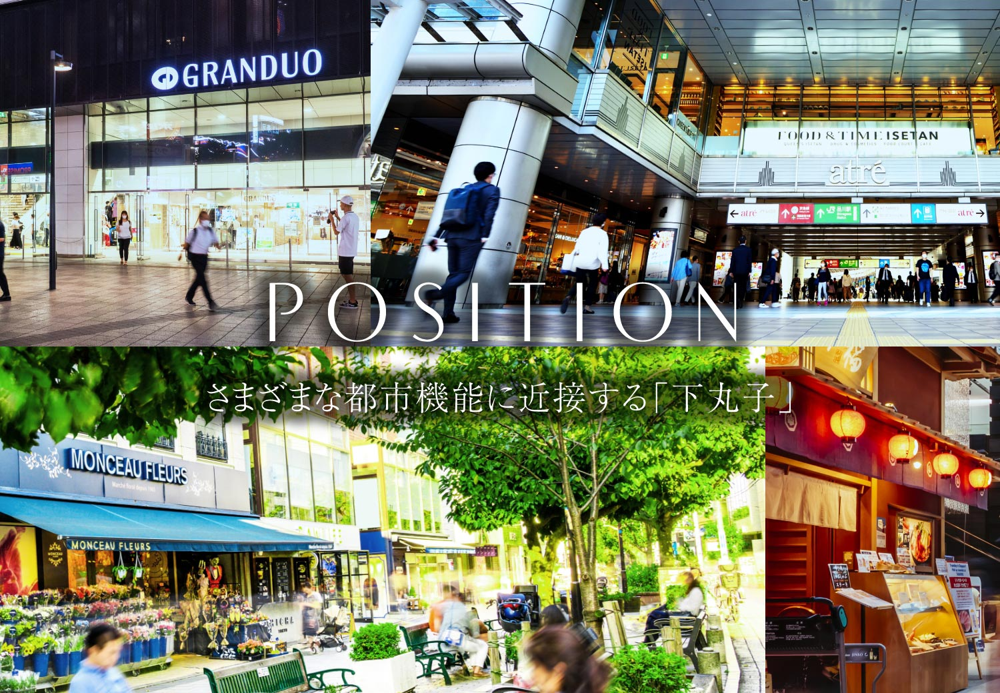
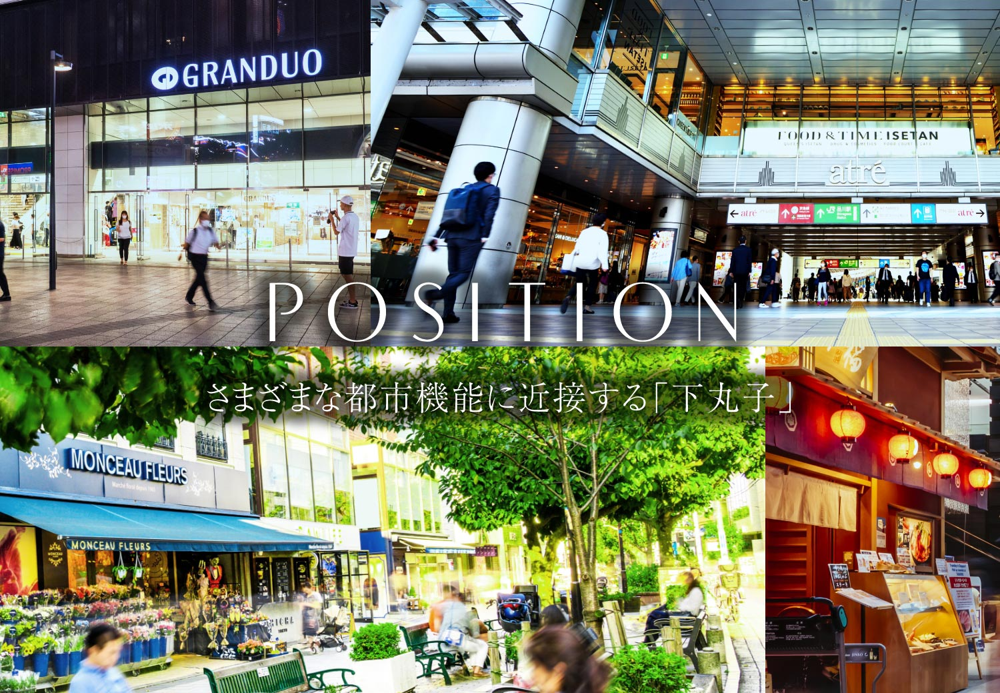
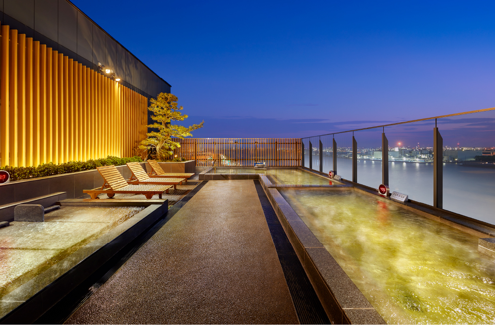

image photo
著しい進化と発展を続ける
3大都心エリアの魅力を享受。
リニア中央新幹線の開通を軸として、日本の3大経済圏の一体化を図るスーパー・メガリージョン構想。その主要駅である「名古屋」駅をはじめ、「栄」駅、「金山」駅周辺では、都心のポテンシャルをさらに高める数々の再開発計画が進行中。
この3大都心エリアをライフステージに、より豊かで快適な未来がここにはじまります。

航空写真1
※掲載の航空写真1は「国土地理院ウェブサイト（https://mapps.gsi.go.jp/maplibSearch.do#1）」より引用（2023年7月現在）したものを基に現地部分の光などCG合成・加工をしたものです。また、周辺環境は将来変わる場合があります。
※1.リニア中央新幹線（品川・名古屋間：2027年開業予定、品川・大阪間：2045年開業予定※一部区間の工事遅延により遅れる見通しがあります）、出典：国土交通省ホームページ、JR東海ホームページ（2023年7月現在）
※2.久屋大通公園（北エリア・テレビ塔エリア）整備運営事業（2038年2月末事業終了予定）出典：名古屋ホームページ（2023年7月現在）
※3.（仮称）錦三丁目25番街区計画（2026年夏頃開業予定）出典：三菱地所株式会社、株式会社パルコ、日本郵政不動産株式会社、明治生命保険相互会社、株式会社中日新聞社プレスリリースより（2022年6月13日付）
※4.中日ビル建て替え計画（2024年春グランドオープン予定）出典：中部日本ビルディング株式会社、株式会社中日新聞社プレスリリースより（2023年4月25日付）


未来を拓くターミナルシティへと飛躍する名駅エリア。
モダンな高層ビルが建ち並ぶドラマチックな景観が印象的な「名古屋」駅周辺。リニア中央新幹線開業に伴う経済圏の拡大、国際的な都心拠点にふさわしい街づくりを目指し、さらなる開発が進行中です。


image photo
モダンな高層ビルが建ち並ぶドラマチックな景観が印象的な「名古屋」駅周辺。リニア中央新幹線開業に伴う経済圏の拡大、
国際的な都心拠点にふさわしい街づくりを目指し、さらなる開発が進行中です。
-
JRゲートタワー（約3.1km）
-

JRセントラルタワーズ（約3.0km）
-
ミッドランドスクエア（約2.8km）
-

JPタワー名古屋（約3.3km）
リニア中央新幹線開通で、東京・大阪への移動がよりスピーディーで快適に。


-
超電導リニアを採用し最高速度約500㎞/hの走行を可能にすることで、品川・名古屋・大阪間の移動時間を一新するリニア中央新幹線。全線開通後は通勤・旅行エリアの拡大や、遠方の家族や友人に会いやすくなるなど、時短がもたらすライフスタイルの変化が期待されます。
-

image photo
-

image photo
※リニア中央新幹線（品川・名古屋間：2027年開業予定、品川・大阪間：2045年開業予定※一部区間の工事遅延により遅れる見通しがあります）
出典：国土交通省ホームページ、JR東海ホームページ（2023年7月現在）
※掲載の所要時間は待ち時間・乗り換え時間を含んだ通勤時（カッコ内は平常時）の目安であり、時間帯により多少異なります。


魅了しつづける都心。名古屋随一の商業都市「栄」。
老舗デパートから最新のファッションビル、海外ブランドの店など多彩な施設が集まる名古屋最大の繁華街「栄」。“最高の時間と居心地を提供”を基本コンセプトに掲げる「栄地区グランドビジョン」に基づき、更に魅力的な街へと進化を続けています。
※「栄地区グランドビジョン」出典：名古屋市ホームページより（2023年6月現在）。


image photo
老舗デパートから最新のファッションビル、海外ブランドの店など多彩な施設が集まる名古屋最大の繁華街「栄」。“最高の時間と居心地を提供”を基本コンセプトに掲げる「栄地区グランドビジョン」に基づき、更に魅力的な街へと進化を続けています。
※「栄地区グランドビジョン」出典：名古屋市ホームページより（2023年6月現在）。
-

名古屋パルコ
（約1,630m／徒歩21分） -

ナディアパーク
（約1,650m／徒歩21分） -

松坂屋名古屋
（約1,800m／徒歩23分） -

ラシック
（約2,000m／徒歩25分）
日常の憩いの場として、美しく進化した「Hisaya-odori Park（久屋大通公園）」

image photo
Hisaya-odori Park（約2,500m）
久屋大通公園（北エリア・テレビ塔エリア）整備運営事業により、公園と店舗が一体となった「Hisaya-odori Park」が2020年にオープン。広々とした水盤のミズベヒロバをはじめ、芝生広場、モダンな商業施設RAYARD Hisaya-odori Park（約2,500m）によってグレードアップした一帯は、おしゃれなアーバンリゾートとして、カルチャーの発信地として、人気を高めています。
※久屋大通公園（北エリア・テレビ塔エリア）整備運営事業（2038年事業終了予定）
出典：名古屋市ホームページより（2023年7月現在）
都市機能を向上させる
超高層ビル建設計画が進行中
-

提供素材（完成予想図）
中日ビル建て替え計画
地上31階・地下４階建。商業施設、ホール、広場、オフィス、ホテルを擁する複合ビルへ
※中日ビル建て替え計画（2024年春グランドオープン予定）
出典：中部日本ビルディング株式会社、株式会社中日新聞社プレスリリースより（2023年4月25日） -

提供素材（完成予想図）
（仮称）錦三丁目25番街区計画
地上41階・地下４階建。商業施設、シネマコンプレックス、オフィス、高級ホテルを計画
※（仮称）錦三丁目25番街区計画（2026年3月竣工予定）
出典：三菱地所株式会社、株式会社パルコ、日本郵政不動産株式会社、明治生命保険相互会社、株式会社中日新聞社プレスリリースより（2022年6月13日）


交通拠点から交流拠点へ。さらに進化する次世代ターミナル「金山」。
JR東海道本線・中央本線、名鉄名古屋本線、地下鉄名城線・名港線の5路線が行き交う、市内有数のビッグターミナル「金山」駅。この特徴を基に当エリアでは「金山駅周辺まちづくり構想」を計画。交通要所としての回遊性・交流性を向上させながら商業・ビジネスなどの都市機能の充実を図っています。また名古屋市音楽プラザ、名古屋都市センター（約1,170m）などの文化芸術や創造拠点との連携によって、より賑わいあふれる街の形成を目指しています。


image photo
JR東海道本線・中央本線、名鉄名古屋本線、地下鉄名城線・名港線の5路線が行き交う、市内有数のビッグターミナル「金山」駅。この特徴を基に当エリアでは「金山駅周辺まちづくり構想」を計画。交通要所としての回遊性・交流性を向上させながら商業・ビジネスなどの都市機能の充実を図っています。また名古屋市音楽プラザ、名古屋都市センター（約1,170m）などの文化芸術や創造拠点との連携によって、より賑わいあふれる街の形成を目指しています。


航空写真2
-

名古屋市音楽プラザ
（約990m／徒歩13分） -

日本特殊陶業市民会館
（約1,090m／徒歩14分） -

image photo
金山南ビル美術館棟（旧名古屋ボストン美術館）
（約1,240ｍ／徒歩16分）
※掲載の航空写真2は、金山駅付近上空から撮影（2023年6月）したものに光などCG合成・加工をしたものです。また、周辺環境は将来変わる場合があります。
※出典：「金山駅周辺まちづくり構想」名古屋市公式HPより（2017年3月）
駅前を一新。2020年春に全館リニューアルした駅北口の「アスナル金山」。
ファッション・雑貨、グルメ、サービス＆カルチャーなど、50店舗を超える様々なジャンルの店舗やワゴンショップで構成されたスタイリッシュな大型ショッピングモール。建物の1階中央にある開放的な広場では各種イベントも開かれ、ショッピングやレジャースポットとして多くの人々で賑わっています。
-

アスナル金山（約1,040m／徒歩13分）
-

イベントやライブが開催される「明日なる広場」

グルメやファッションのお店が充実
-

わくわくするバラエティに富んだショップが充実

SUIT SELECT
［メンズ・ウィメンズファッション］
ITS'DEMO
［ファッションバラエティストア］
Green Parks topic
［レディスファッション］
ヴィレッジヴァンガード
［書籍、バラエティ雑貨］
ALEX COMFORT
［インポートコスメ、雑貨］
ほか -

SUBWAY［サンドイッチ］
ALOHA TABLE
［ハワイアン・カフェ＆ダイナー］
ロンフーダイニング
［麻婆豆腐、チャーハン、担々麺］
成城石井
［クオリティスーパーマーケット］
baguette rabbit［ベーカリー］
ほか
新星堂［CDショップ］
整体・骨盤カラダファクトリー
［整体・骨盤調整・もみほぐし］
丸善［本・文具］
ジョイフル恵利［着物レンタル・販売］
ラフィネ［リラクゼーションスペース］
ほか
※出典：アスナル金山HPより（2023年７月現在）


名古屋の中枢を担う機能が集約した中区。
愛知県庁・名古屋市役所などの行政機関や、栄・伏見・丸の内といったビジネス街が集中する中区は、西側の土地に比べて標高が高く安定した地盤であることから、徳川家康が名古屋城と城下町を築いた地と言われています。ここに形成された武家屋敷や神社・仏閣、町人の町などが現代の中区の基盤となって以来、名古屋市の中心地として発展を重ねています。

image photo
名古屋の中枢を担う機能が集約した中区。
image photo
愛知県庁・名古屋市役所などの行政機関や、栄・伏見・丸の内といったビジネス街が集中する中区は、西側の土地に比べて標高が高く安定した地盤であることから、徳川家康が名古屋城と城下町を築いた地と言われています。ここに形成された武家屋敷や神社・仏閣、町人の町などが現代の中区の基盤となって以来、名古屋市の中心地として発展を重ねています。
-
高台概念図
-
名古屋城の南に位置する本計画は、標高約10.1mの安定した地盤といわれる熱田台地の上にあります。


image photo
名古屋城の南に位置する本計画は、標高約10.1mの安定した地盤といわれる熱田台地の上にあります。
-
名古屋城と城下町の入口となった
歴史を持つ橘二丁目付近
-
名古屋城と城下町の入口となった
歴史を持つ橘二丁目付近本計画が面する下街道は、江戸時代、城下町を経て名古屋城へ真っ直ぐと繋がる目抜き通りでした。名古屋の城下には治安や防衛のため、主要な街道の入口に「大木戸」が設けられており、本計画の目前は「橘町大木戸」のあったメモリアルな場所。城下への入り口を記念して、大木戸の柱をイメージした街路灯と案内板が設置されています。
※「名古屋城下図（江戸時代後期）デジタルリメイク」出典：Network2010
※掲載の標高は「国土地理院ウェブサイト」にて検索（2023年6月現在）したものです。
（計測地/【シティタワー東別院】愛知県名古屋市中区橘2丁目3、【名古屋駅】：愛知県名古屋市中村区名駅1丁目1-4、【名古屋城】：愛知県名古屋市中区本丸1番1号、【栄駅】：名古屋市中区栄3丁目5-12、【金山駅】：愛知県名古屋市中区金山1丁目17-18、【熱田神宮】：愛知県名古屋市熱田区神宮1丁目1-1）
※掲載の環境写真は2023年6月に撮影。
※距離表示については地図上の概測距離を、徒歩分数表示については80ｍを1分として算出し、端数を切り上げたものです。
※掲載の情報は2023年9月現在のものです。
※掲載の施設内容等は将来変わる場合があります。